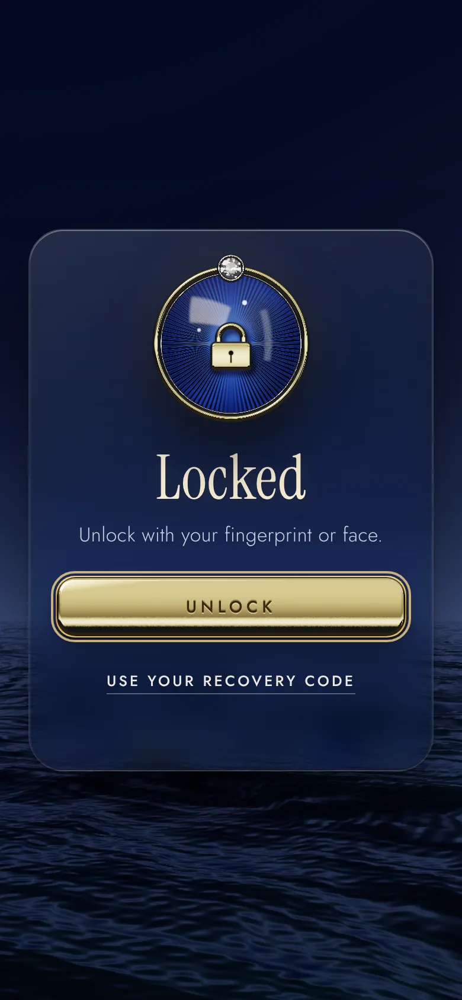
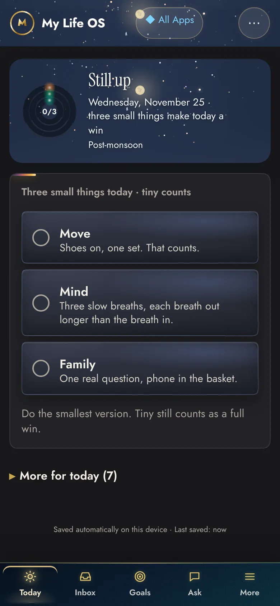
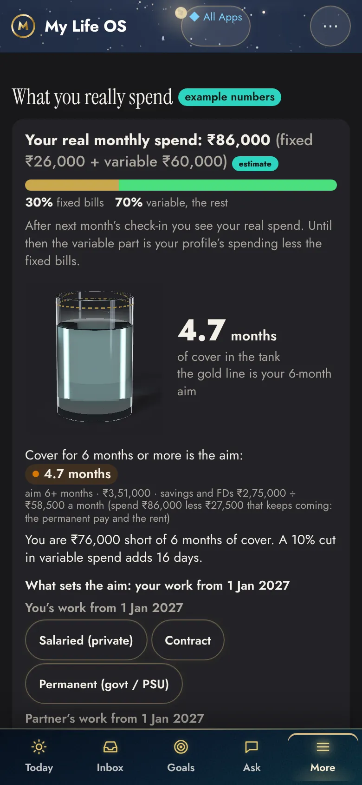

Your private AI, on your own devices.
One AI that knows your goals, money, work and family. Your secrets stay on hardware you own, and you get a little better every day.
- Free for individuals, no card
- Works offline, on a 16 GB laptop
- Code you can read: FSL-1.1-MIT

Kept on your side.The sensitive part of every question is answered only by the model on your own machine.
- 62things it does, each with a status light that says what is real
- 11 of 11attacks in our red-team suite blocked (OWASP LLM Top 10)
- 1650+automated tests run on every change
- 50end-to-end journeys run the real product in CI
Counted from the code on every release. Mappings with evidence, not certifications: what we do not claim.
Private. Guarded. Provable.
Public AI remembers everything you tell it. SecuRAX works for one owner, you, and keeps what it knows on machines you control.
Private
It runs on your laptop or server. Anything sensitive is answered only by the model on your own machine, and it works fully offline.
Guarded
One gateway blocks attacks and strips personal data, such as PAN, card and mobile numbers, before any model sees it.
Provable
No "trust us". Every promise links to the test that proves it, and a status light shows what is real today.
Two minutes every morning. That is the whole habit.
One calm screen shows the three small things that make today count, the one action that matters, and what is due. It installs on your phone and works without a connection.



Wealth, held to an aim
Net worth as gold bars: 6 of 10, each bar ₹10 lakh.
A buffer that lasts
Savings as water in glass: 4.7 months of cover, the line at 6.
Calm, on the breath
A live sea that rises as you breathe in, holds, and falls as you breathe out.
Example numbers, drawn by the app's own engines. Built and proven
What it does for you today.
17 tools for one person, newest first. They are part of the 62 things SecuRAX does.
Money health, with a path for each finding
Money that leaks into poor policies and idle cash goes to the cover and goals your family needs, and the mix stays right without constant tinkering.
./securax openBuilt and proven
Calls journal
You learn how good your judgement really is, so you trust it where it is good and check it where it is not.
./securax openPartly built
Life systems, running for you
The rules you already know run without willpower, and you see the one next step that matters.
./securax openBuilt and proven
See all 17
Catch me up
In ten seconds you see the few things that actually need you today, nothing leaves your box.
./securax catchupBuilt and proven
One lever a week
Every week the one thing most worth changing about your life is chosen for you and made effortless, so you improve where it actually matters without having to decide what to work on.
./securax improveBuilt and proven
One idea a week
Every week one timeless, high-leverage idea sharpens how you think, decide and work, tied to a goal you set, so you compound as a professional and a person instead of drowning in a feed you have to wade through.
./securax insightBuilt and proven
Scan a document with your phone
You capture a paper document in seconds from your phone without typing it out, and it never leaves your device.
./securax openPartly built
Understands what it sees, and spots scams
The gap between a thing in your hand and a decision in your Life OS nearly disappears — and a scam is caught before you tap, not after.
./securax openPartly built
Life papers, read for you
No more updating spreadsheets by hand to know what is still open: the few things that matter come to you, with a date and an alarm.
./securax lifeos import workbookPartly built
Your progress
You see, every week, that your days and your estate are getting better, and you always know the one next step.
./securax progressPartly built
Apps for Android and iOS
An app you built for yourself can be in a store without rewriting it, and you know in advance what a reviewer will ask for.
./securax os mobile-check vantagePartly built
Life OS Inbox
Nothing you capture is lost; each item becomes a decision or a task.
./securax openPartly built
Password manager
You stop reusing passwords, and get them on every device.
./securax start passwordsPartly built
Sign in to AWS, Google Cloud, Azure
You can grow to a real cloud setup when you are ready, without starting again.
./securax cloud login awsPartly built
SecuRAX on every device
Your estate works from your phone anywhere, like any app.
./securax online setupPartly built
Your AI history
Everything you learned with other AIs becomes yours to search and reuse.
./securax knowledgeBuilt and proven
Guiding Map
Your days line up with what matters to you, and you can see it happening.
./securax openBuilt and proven
Free to own, forever. Pay only when you want help.
The Community Edition is the whole product, free to use: the gateway, your assistant, the Command Center and the Guiding Map, with residency mode and encrypted backups. Paid editions add support and never take features away.
See more: who it is for, a live demo, how it works, security
For anyone with something worth protecting.
Individuals and families
Plan money, health, career and family on one private map. Your documents and your children's details never sit on someone else's server.
Founders and creators
Think out loud about the deal, the hire or the draft. The confidential parts are answered on your own machine.
Professionals and leaders
A chief of staff that remembers every priority and keeps client details redacted before any model sees them.
Organisations and regulated firms: see SecuRAX Shield and Readiness for NBFCs.
It guards you, even from your own copy-paste.
Two real prompts, run through SecuRAX's guardrails. This is the actual output, not a mock-up.
mobile [IN_MOBILE_REDACTED] wants a loan top-up.
Sample data, not a real customer. Every block and redaction is written to an audit log you can read.
From clone to a guarded answer in three steps.
1. Install
On Windows (WSL), macOS or Linux. It sizes itself to your machine.
./securax setup2. Lock it down
Keep personal and bank data local, and encrypt every backup.
./securax residency enable --jurisdiction IN3. Take it with you
Your phone and tablet, over a private tunnel only your devices can reach.
./securax phones --applyStrong enough for the people who answer to regulators.
Each mapping links every control to the test or journey that proves it, and lists the gaps that remain.
These are mappings with linked evidence, not certifications. SecuRAX has not yet been independently audited, and we say so.
Questions people ask
Do I need to be technical?
You need to be able to copy a few commands. The setup is guided, keys are typed in hidden input, and ./securax doctor tells you in plain words what to fix. The Professional edition will set it up for you.
Does my data leave my machine?
Not the sensitive part. With residency enabled, personal and bank-related data is answered only by the model on your own machine. Cloud models are optional and receive only what your policy allows, after redaction.
Is it as smart as ChatGPT?
For everyday questions it uses the same class of models (Gemini, Llama, Qwen, DeepSeek and others), chosen automatically and failing over in seconds. For private questions it uses the model on your machine, which is smaller but never leaves it.
What does it cost?
Nothing to own or run. The default AI uses free tiers and ends on a local model. Paid models are opt-in, behind a hard monthly budget cap.
Can an organisation rely on it?
It is mapped to RBI, SEBI CSCRF, NIST AI 600-1 and CCSP with linked evidence, but it is not yet independently audited or certified. Run it on hardware your organisation approves, and never on an employer-issued device for personal use.
Own your intelligence.
Install it tonight. Use it for seven mornings. If you are not 1% better, you have lost nothing.